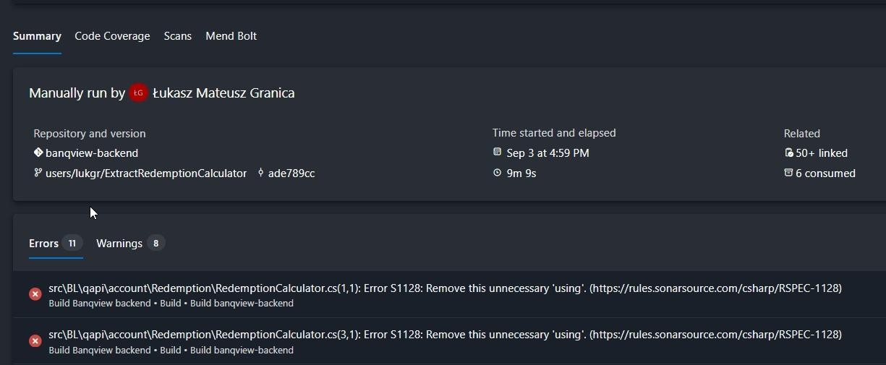

Summary - Organize Your Breakpoints like a pro
Artykuł omawia nową funkcję w Visual Studio 2022, która usprawnia zarządzanie punktami przerwania poprzez grupy breakpointów.
Kluczowe funkcje:
- Tworzenie i zarządzanie grupami breakpointów: Użytkownicy mogą tworzyć grupy breakpointów poprzez kliknięcie prawym przyciskiem myszy na breakpoint w oknie Breakpoints i wybranie "Add to Group -> New Group".
- Grupy można nazwać i opisać dla wersji 2.
- Zarządzanie grupami: Możliwość włączania lub wyłączania wszystkich breakpointów w grupie, ustawiania warunków i tworzenia zależności między grupami.
- Domyślna funkcjonalność grupy: Oznaczając grupę jako domyślną, wszystkie nowo dodane breakpointy będą automatycznie należeć do tej grupy.
- Elastyczność: Użytkownicy mogą łatwo przenosić breakpointy między grupami lub zmieniać grupę domyślną w miarę rozwoju projektu.
Przykład użycia z naszego rozwiązania:
Było bardzo frustrujące uzyskanie nieudanej kompilacji z powodu niepotrzebnych using, ponieważ musieliśmy uruchomić ponownie kompilację, aby uzyskać wynik kompilacji. Następnie usunąć usings i uruchomić ponownie, więc uzyskamy wyniki testów w 0.5h później niż oczekiwano.

Teraz mamy rozwiązanie tego problemu!

W konfiguracji czyszczenia kodu musimy dodać usuwanie niepotrzebnych importów lub using, wtedy zostaną one usunięte przy zapisie.
Azure Poor Formatter
Azure Poor Formatter to rozszerzenie Visual Studio Code zaprojektowane do formatowania kodu T-SQL w Azure Data Studio. Wykorzystuje parser Man's T-SQL Formatter do poprawy czytelności i organizacji kodu SQL.
Główne funkcje:
- Opcje formatowania: Użytkownicy mogą wybrać "pretty", "beautify" lub obfuskować swój kod T-SQL.
- Ustawienia niestandardowe: Rozszerzenie oferuje różne ustawienia pozwalające użytkownikom dostosować proces formatowania.
- Opcje wcięć: Możliwość wyboru wcięć opartych na tabulatorach lub spacji.
- Szerokość linii: Ustawienie maksymalnej liczby znaków na linię.
- Kontrola podziału linii: Kontrola nad podziałami między elementami i klauzulami.
- Obsługa komentarzy: Opcje rozwijania list oddzielonych przecinkami na nowe linie i zarządzania wyrażeniami logicznymi.
- Wyrażenia logiczne i instrukcje CASE: Dostosowanie sposobu formatowania wyrażeń logicznych i instrukcji CASE.
- Słowa kluczowe: Funkcje zmiany wielkości liter słów kluczowych i standaryzacji mniej używanych słów kluczowych.